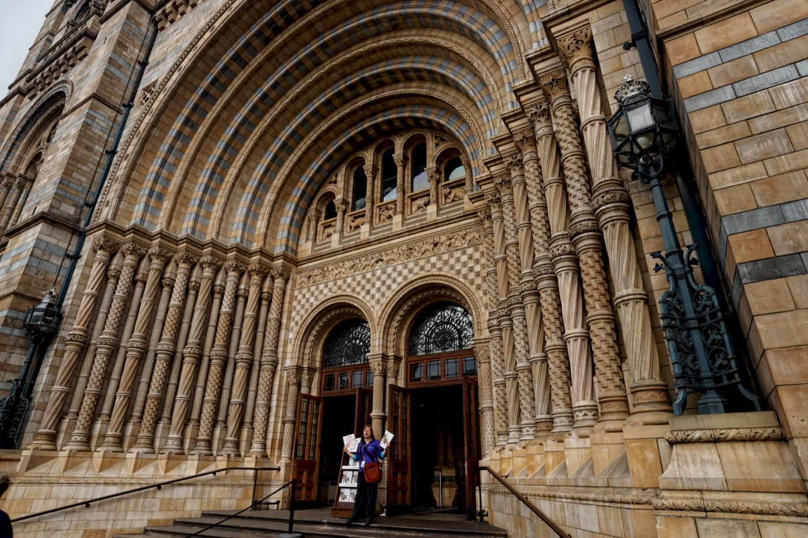
Una balena appesa al soffitto, un supermercato che trema e la capsula dell'Apollo 10. Poi il parco più grande del centro, fino al palazzo dove è nata la regina Vittoria.
Perché andarci
Su Exhibition Road ci sono, a cento metri l'uno dall'altro, il museo di storia naturale, quello della scienza e quello dell'arte e del design. Non si paga per entrare in nessuno dei tre.
Il quartiere nasce dalla Grande Esposizione del 1851, voluta dal principe Alberto, il marito della regina Vittoria: con i guadagni si comprarono i terreni dove sorsero musei, scuole e la Royal Albert Hall. Ancora oggi qualcuno chiama la zona "Albertopolis". Appena sopra comincia il verde: Kensington Gardens e Hyde Park, uniti, sono circa 250 ettari di prati, con un lago lungo al centro e Kensington Palace sul lato ovest. È la zona ideale per un giorno di pioggia, perché quasi tutto è al coperto.
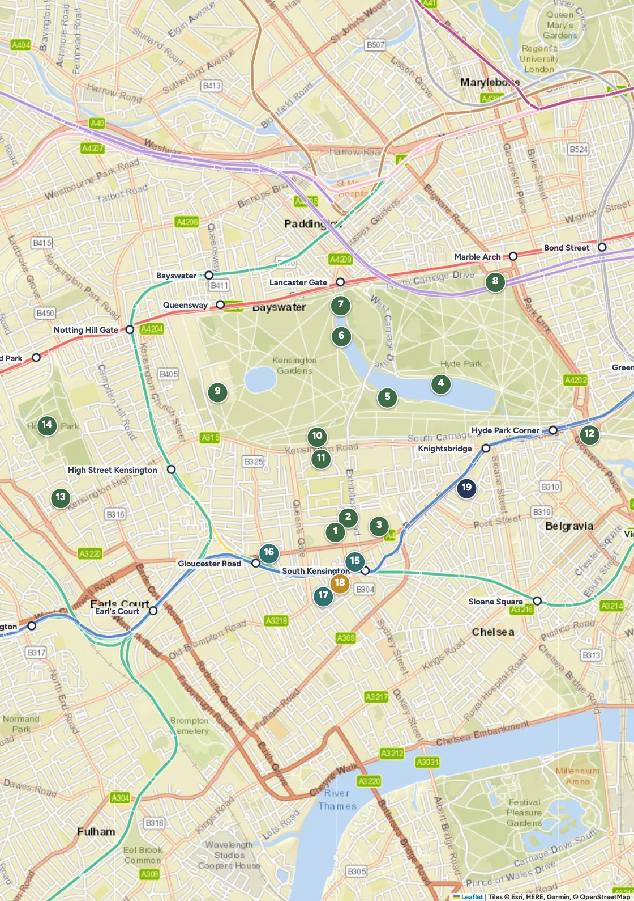
La mappa
Orientarsi
Exhibition Road è la spina dorsale del quartiere: parte dalla stazione di South Kensington e sale dritta verso il parco. In basso, sulla sinistra, il Natural History Museum; subito dopo il Science Museum; sulla destra il V&A. In cima c'è la Royal Albert Hall, con davanti l'Albert Memorial e, oltre la strada, Kensington Gardens.
Kensington Gardens e Hyde Park sono un unico grande parco, diviso dal lago della Serpentine. A est si arriva a Hyde Park Corner e a Green Park, a pochi minuti da Buckingham Palace; a sud-est c'è Knightsbridge con Harrods. Più a ovest, oltre Kensington High Street, ci sono Leighton House e Holland Park.
Orari di febbraio 2027 pubblicati a ottobre 2026. In inverno Kensington Gardens chiude verso le 17:30, con il buio.
Dalla stazione di South Kensington parte un tunnel pedonale lungo e piastrellato, aperto al pubblico dal 1908, che porta ai musei senza uscire all'aperto. Dalla metro si segue il cartello "Museums".
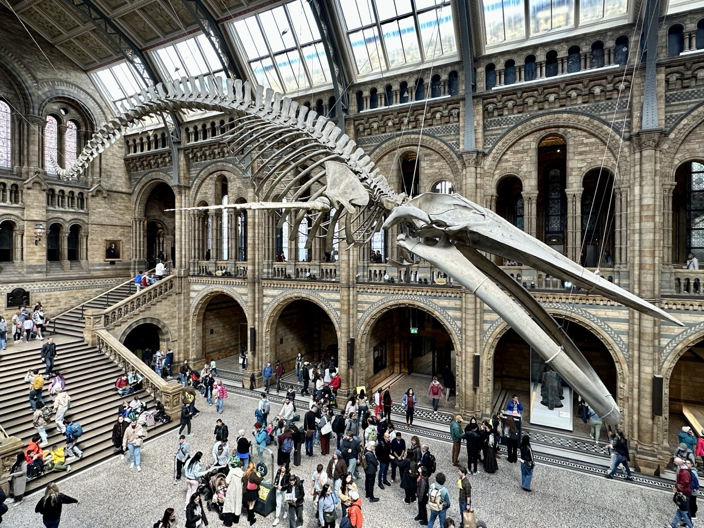
Top sight · 1
Una cattedrale di terracotta piena di dinosauri, meteoriti e pietre preziose, con una balena di 25 metri sospesa sopra l'ingresso.
Il palazzo, aperto nel 1881, ha animali scolpiti nella terracotta: quelli estinti nell'ala est, quelli viventi nell'ala ovest. Nella grande sala d'ingresso, la Hintze Hall, pende dal 2017 lo scheletro di Hope, una balenottera azzurra lunga 25,2 metri, spiaggiata in Irlanda nel 1891. Prima, al suo posto, c'era Dippy, il calco di diplodoco che tutti ricordano: oggi è in prestito a Coventry, e nel giardino del museo ne è rimasta una copia in bronzo, Fern.
Il simulatore di terremoto è qui, non al Science Museum come dicono molti video. È una ricostruzione di un supermercato di Kobe: gli scaffali tremano come durante il terremoto del 1995. Si arriva con la scala mobile che attraversa un enorme globo di metallo, nella Earth Hall.
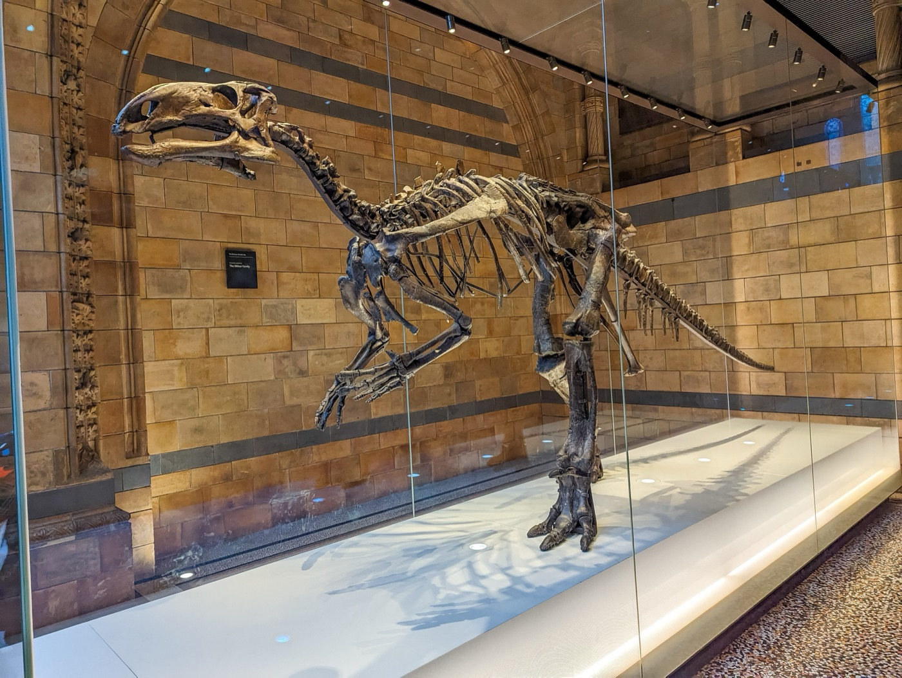
Uno degli scheletri di dinosauro del museo, un Mantellisaurus.
Da non perdere. La galleria dei dinosauri, con il tirannosauro meccanico che ruggisce e il primo iguanodonte conosciuto dalla scienza. Volcanoes and Earthquakes, con il supermercato che trema e i calchi delle vittime di Pompei. The Vault, la sala blindata delle gemme: c'è una piramide di 296 diamanti colorati e un'ametista che, si dice, porta sfortuna a chi la possiede. Per le ragazze è la storia più bella del museo.
La mostra delle cento migliori foto naturalistiche dell'anno, dal 16 ottobre 2026 all'11 luglio 2027. Adulti £19, ragazzi 4-17 anni £9,50 (ven-lun); mar-gio £17 e £8,50. Per noi 8, £123,50 o £110,50: anche la ragazza di 16 anni paga da ragazza. Il biglietto comprende l'ingresso al museo.
Accanto ai dinosauri c'è lo Shake Bar, dove ci si compone il proprio frappè: la pausa perfetta a metà visita. Per sedersi in otto c'è il T. rex Restaurant, vicino all'ingresso centrale, con pizza e menu per ragazzi. Guardaroba: £4 a cappotto.
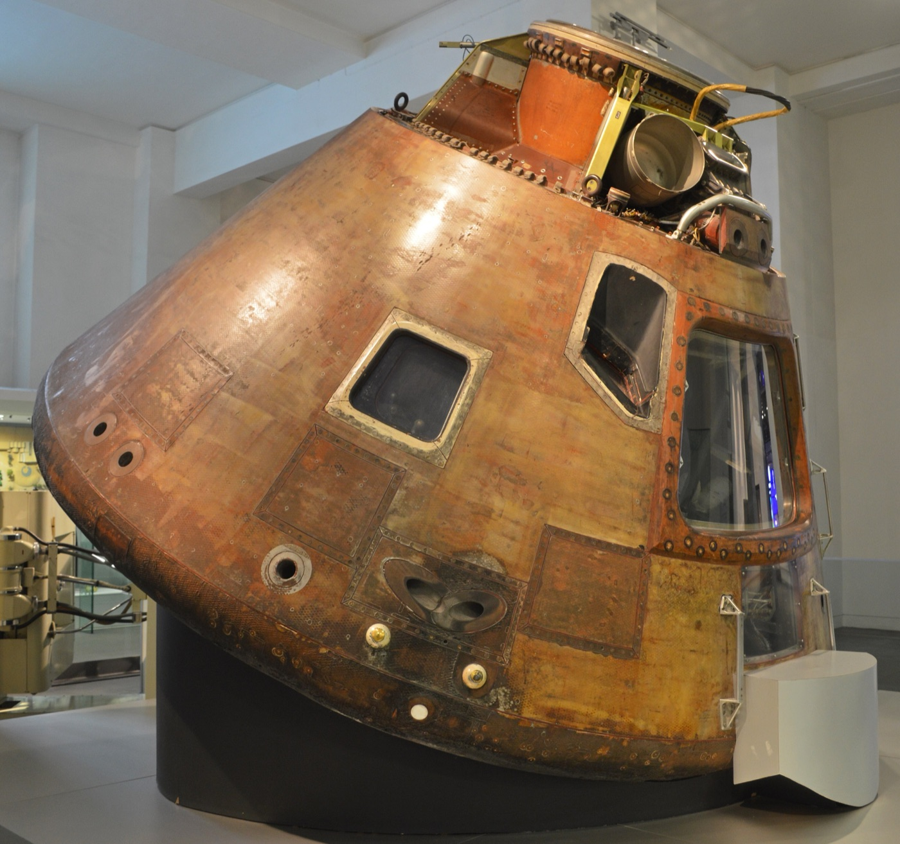
Top sight · 2
Macchine a vapore, aerei appesi al soffitto e una vera capsula spaziale tornata dalla Luna.
La nuova galleria Space, aperta a settembre 2025, mette accanto il modulo di comando dell'Apollo 10, che nel 1969 girò intorno alla Luna, e una capsula russa Soyuz, con la tuta spaziale di Helen Sharman, la prima astronauta britannica. Nell'Energy Hall, all'ingresso, girano le grandi macchine a vapore della rivoluzione industriale; al terzo piano, nella galleria Flight, c'è il biplano che nel 1919 attraversò per primo l'Atlantico senza scalo.
Nell'Energy Hall c'è il laboratorio in soffitta di James Watt, l'inventore che perfezionò la macchina a vapore, con dentro circa 8.430 oggetti.
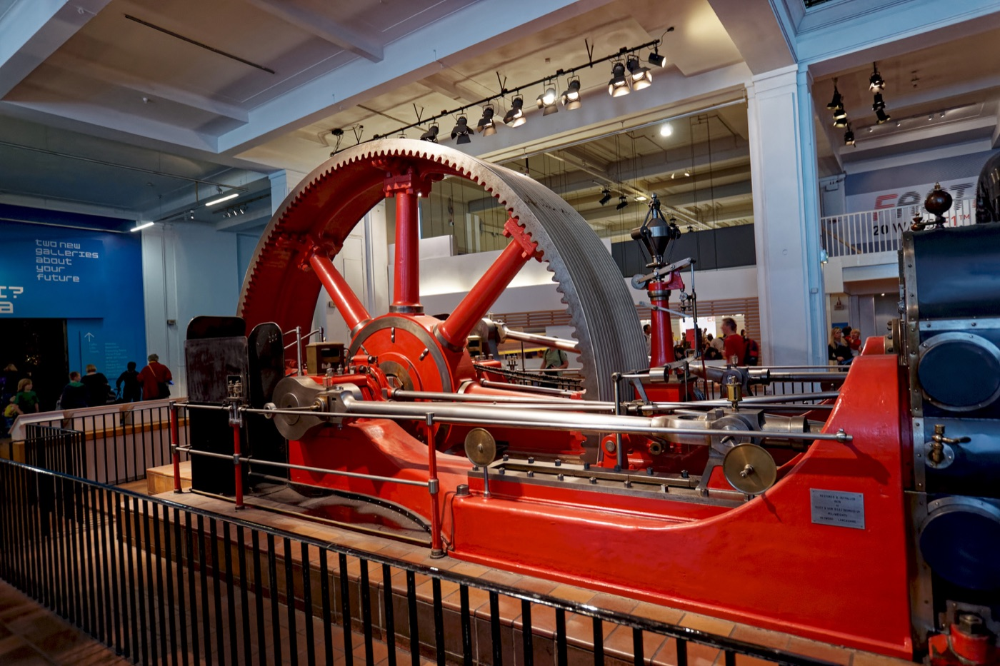
La galleria a pagamento del terzo piano: una cinquantina di esperimenti da toccare, scivoli giganti, una bobina di Tesla che fa fulmini veri e spettacoli di scienza dal vivo. Pensata per 7-14 anni: perfetta per le due più piccole.
Wonderlab è più bello per la 12enne e la 13enne; alla 16enne può piacere di più Power Up. Le fasce del primo mattino e del tardo pomeriggio costano meno, se prenotate almeno il giorno prima.
Becoming America, al secondo piano: la scienza nella nascita degli Stati Uniti, con una rara copia della Dichiarazione d'indipendenza del 1776. Serve un biglietto gratuito; consigliata dagli 11 anni. Per mangiare, il lunedì, c'è l'Energy Café al piano terra (10-17:30).
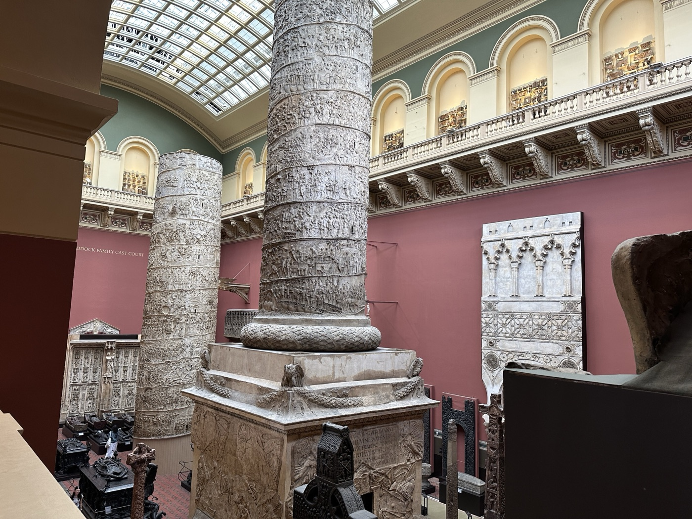
Top sight · 3
Il più grande museo al mondo di arti decorative e design: cinquemila anni di vestiti, gioielli, mobili e sculture.
Per le ragazze ci sono la Tipu's Tiger (sala 41), una tigre di legno a grandezza naturale che azzanna un uomo vestito all'europea, con dentro un organo che imita i ruggiti e le urla, e le Cast Courts, due sale enormi piene di calchi in gesso: la Colonna Traiana tagliata in due e il David di Michelangelo. La galleria della moda è chiusa per lavori: riapre nella primavera 2027.
Per le visite della regina Vittoria fu fatta, verso il 1857, una foglia di fico in gesso da appendere al David nudo con due ganci. Oggi è esposta in una vetrina sul retro del piedistallo: la sfida è trovarla.
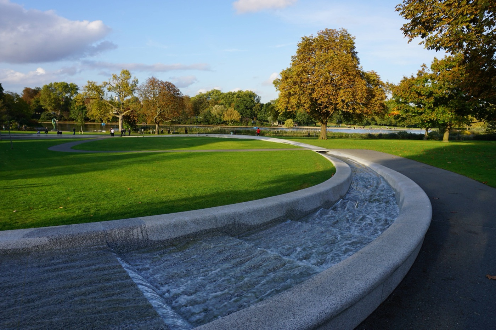
Top sight · 4
Il polmone verde del centro: prati a perdita d'occhio, un lago lungo e stretto e scoiattoli che si avvicinano senza paura.
Enrico VIII se lo prese nel 1536 come riserva di caccia; un secolo dopo fu aperto al pubblico. Il lago della Serpentine divide il parco in due: a est Hyde Park, più aperto, con Speakers' Corner; a ovest Kensington Gardens, più raccolto, con il palazzo, Peter Pan e le fontane degli Italian Gardens. D'estate ci si va in barca; in inverno le barche escono solo da mercoledì a domenica.
Il Winter Wonderland finisce il 3 gennaio: a febbraio il parco è tranquillo. Il sole tramonta verso le 17; fate la parte nel verde prima delle 16 e i musei dopo.
Da vedere · nel parco
Non è una fontana con lo zampillo: è un anello ovale di 545 blocchi di granito della Cornovaglia, dove l'acqua scorre in discesa, agitata da un lato e calma dall'altro. Inaugurata dalla regina nel 2004. Ci si può sedere sul bordo e bagnare i piedi; può chiudere con il gelo.
Nella notte del 30 aprile 1912 J. M. Barrie, l'autore di Peter Pan, fece montare la statua di nascosto, perché i bambini credessero che fosse comparsa per magia, e la annunciò sul Times come il suo regalo del primo maggio. Sta nel punto dove, nel libro, Peter atterra con la sua barca fatta di un nido.
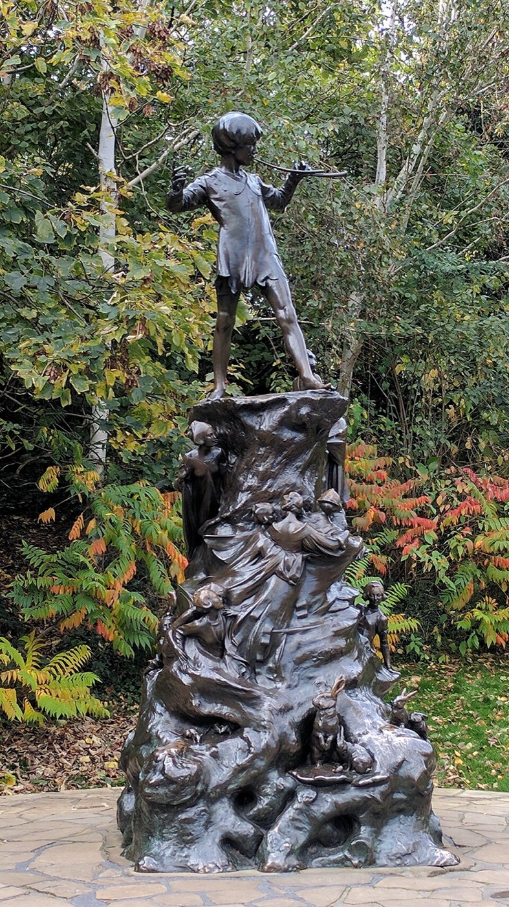
Quattro vasche con fontane, balaustre e urne di pietra, da cui parte il lago. Si dice che siano stati un regalo del principe Alberto alla regina Vittoria. Accanto c'è l'Italian Gardens Café.
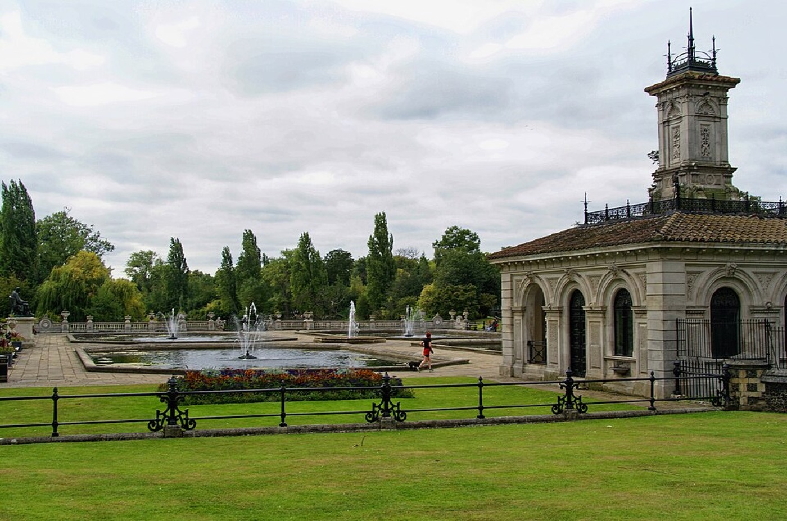
Dal 1872 una legge riserva quest'angolo ai discorsi in pubblico: chiunque può salire su una cassetta e parlare di qualsiasi cosa. Ci hanno parlato Karl Marx, Lenin e George Orwell. Vale la pena solo la domenica mattina; negli altri giorni è un prato vuoto.
Il Diana Memorial Playground, con la nave dei pirati, è solo per bambini fino a 12 anni. Le Serpentine Galleries sono chiuse il lunedì e, a inizio febbraio 2027, tra due mostre.
Qui nacque e crebbe la regina Vittoria, e qui visse Diana. In inverno si visitano gli appartamenti del re e la mostra Victoria: A Royal Childhood, nelle stanze della sua infanzia; quelli della regina e la King's Gallery sono chiusi fino alla primavera 2027, per questo il biglietto costa la metà del solito. Nel Sunken Garden c'è la statua di Diana del 2021.
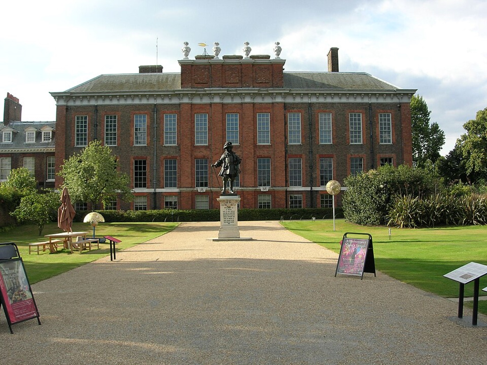
Il principe Alberto morì di tifo nel 1861, a 42 anni. Vittoria gli fece costruire questo baldacchino gotico, finito nel 1872, coperto di mosaici, oro e pietre colorate. Lui, seduto e dorato, guarda verso la sala da concerti che porta il suo nome.
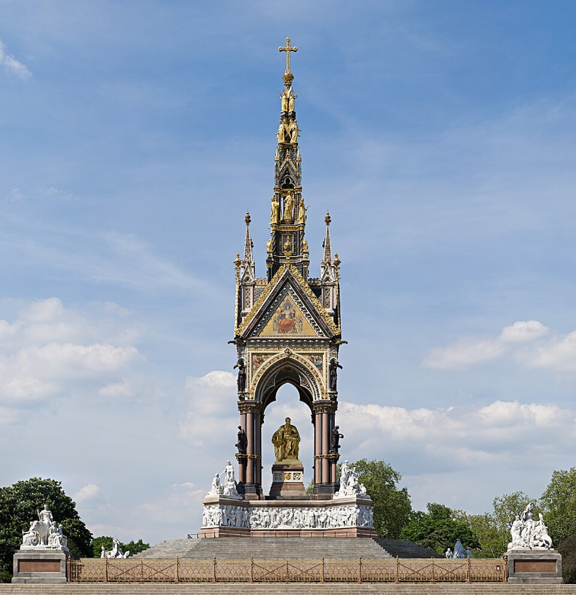
La grande sala rotonda dei concerti, casa dei Proms d'estate. Nella visita si entra nel palco reale e in platea, e a volte si ascolta una prova. Qui si è tenuta perfino una seduta spiritica, e per un'opera la platea fu allagata con 56.000 litri d'acqua. I "funghi" sotto la cupola servono a correggere la famosa eco.
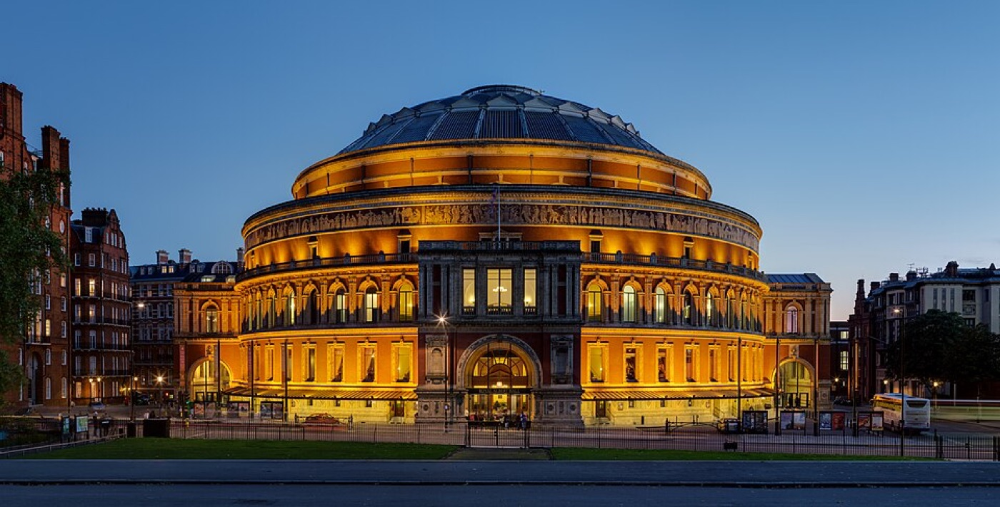
L'arco di trionfo per la vittoria su Napoleone, con in cima il carro di bronzo della Pace: dai balconi si vede dall'alto la rotonda di Hyde Park Corner (£7,65, ragazzi £3,82). Di fronte, Apsley House, la casa del duca di Wellington, detta "Numero 1, Londra" (£11,90, ragazzi £5,95).
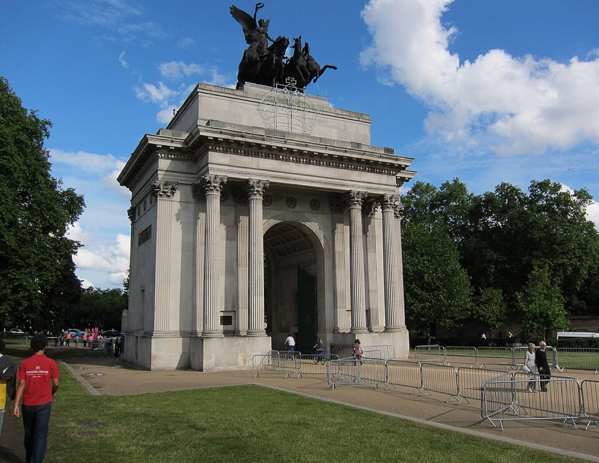
La casa del pittore Frederic Leighton, con l'Arab Hall: una sala a cupola d'oro con una fontana al centro e piastrelle islamiche raccolte nei suoi viaggi. Si visita in un'ora; è la stanza più fotografata del quartiere. Caffè, negozio e giardino sono gratis.
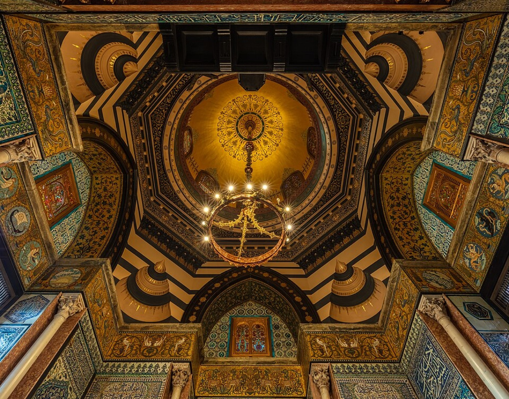
Un giardino giapponese regalato nel 1991 dalla Camera di commercio di Kyoto, con una cascata a gradini, un laghetto di carpe koi e i sassi per attraversarlo. A febbraio gli aceri sono spogli, ma l'acqua e le carpe ci sono. Da Leighton House sono 5 minuti a piedi.
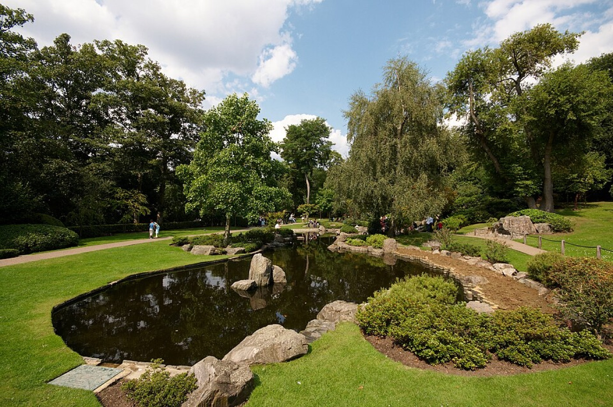
I tre musei, Hyde Park e Kensington Gardens, la fontana di Diana, Peter Pan, l'Albert Memorial, il Kyoto Garden, le Food Halls di Harrods, il tunnel dei musei, e la domenica mattina Speakers' Corner. Si paga solo per le mostre, Wonderlab, il palazzo e le case-museo.
Passeggiata
Circa 4,5 km · 1 ora di cammino, 2-2,5 ore con le soste · da Buckingham Palace ai musei
Da Green Park la Piccadilly line arriva a South Kensington in tre fermate, senza cambi; da St James's Park c'è la District line, sempre diretta. Si visita il museo e si fa solo l'ultimo pezzo di parco, Albert Memorial e Kensington Gardens, se smette di piovere.
Da South Kensington la District line torna ad Aldgate East senza cambi, in circa 25 minuti. Dopo le 17 la metro si riempie di pendolari: con otto persone conviene salire nei vagoni in testa o in coda.
Mangiare
£ meno di £15 a testa · ££ £15-30 · £££ oltre £30. Orari del lunedì.
Cucina libanese colorata: hummus, falafel, piatti di mezze da dividere al centro del tavolo, limonate alla rosa. Si prenota online anche in otto, ed è a due passi dai musei: la scelta più comoda per pranzo o cena.
La catena di pizzerie più amata dalle famiglie inglesi, con menu per ragazzi e prenotazione online. Dieci minuti a piedi dal Natural History Museum.
Pizza napoletana con impasto a lievitazione naturale, a prezzi bassi per Londra. Se accettano prenotazioni per otto è da verificare.
Cupcake e torte all'americana, come la red velvet: si comprano e si mangiano per strada.
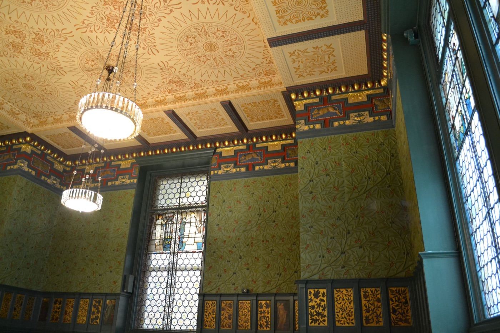
Il Main Café del V&A (10-17) occupa tre sale del 1868 decorate anche da William Morris: il ristorante di museo più antico del mondo. È self-service, comodo in otto; menu ragazzi £7. Al Natural History c'è il T. rex Restaurant, al Science Museum l'Energy Café.
Shopping e consigli
Il grande magazzino più famoso di Londra. Le Food Halls valgono il giro anche senza comprare: la Dining Hall ha le piastrelle originali del 1902. I giocattoli sono al quarto piano. Zaini grandi e valigie non entrano e non c'è il deposito bagagli.
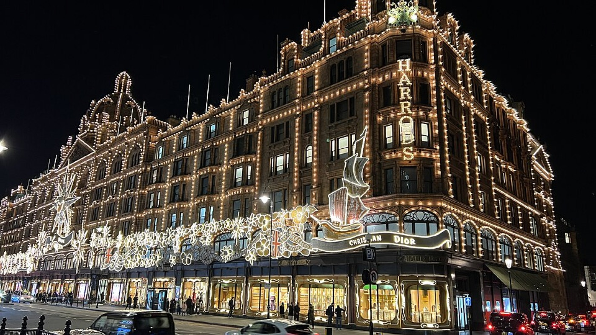
Nei video del gruppo: i tre musei gratis, il simulatore di terremoto (è al Natural History, non al Science Museum), la fontana di Diana e Leighton House. Contate 2-2,5 ore solo per il Natural History.
Qui la ragazza di 16 anni paga quasi sempre da ragazza. Prezzi di ottobre 2026.
Crediti fotografici
Foto da Wikimedia Commons, pubblicate con licenze Creative Commons o in pubblico dominio. Mappe: Esri, HERE, Garmin e i contributori di OpenStreetMap. Linee della metro: OpenStreetMap.